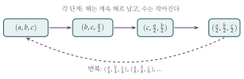

STEP III 2022, 문제 2
다음으로 넘어가기 전에 문제를 먼저 읽어 보자. 이 문제는 OCR에서 내려받을 수 있는 2022년 STEP 문제지 모음(zip 파일)의 STEP III 문제지에 있다: www.ocr.org.uk/Images/696587-2022-past-papers.zip
도입
방정식에 정수해가 없음을 어떻게 증명할 수 있을까? 모든 경우를 다 확인해 볼 수는 없다. 경우가 무한히 많기 때문이다. 1630년대에 페르마(Pierre de Fermat)가 한 가지 방법을 찾아냈다. 어떤 해가 있다면 그로부터 더 작은 수로 이루어진 또 다른 해가 만들어지고, 다시 그보다 더 작은 해가 만들어지며, 이것이 끝없이 계속된다는 것을 보이는 것이다. 그런데 양의 정수는 영원히 계속 작아질 수 없다. 따라서 애초에 해는 존재하지 않았던 것이다.
페르마는 이것을 무한 강하법(method of infinite descent)이라 불렀고, 이 방법을 무척 자랑스러워했다. 이는 1.3 절에서 본 정렬 원리(well-ordering principle)의 뒷면이며, 지금도 방정식에 해가 없음을 증명하는 주요 도구 가운데 하나이다.
시작하기 전에
네 소문항은 모두 구조가 같다. 해가 있다고 가정하고, 그 해를 줄이고, 모순을 이끌어 낸다. 문제는 어떻게 줄이느냐이다.
소문항 (i)에서 \(a^3 + 2b^3 + 4c^3 = 0\)을 보자. 세 항 가운데 두 항은 분명히 짝수이다. 이것은 나머지 한 항에 대해 무엇을 알려 주는가?
모든 강하는 바로 이런 관찰에서 시작한다. 어떤 나누어떨어짐(divisibility)이 저절로 강제되는 것이다.
차근차근 풀기
단계 1 첫 번째 강하
\(a^3 = -2b^3 - 4c^3\)이므로 \(a^3\)은 짝수이고, 따라서 \(a\)도 짝수이다(홀수의 세제곱은 홀수이다). \(a = 2p\)로 놓자. 그러면 \(|p| = |a|/2 < |a|\)이고, 대입하면 \[8p^3 + 2b^3 + 4c^3 = 0 \quad\Longrightarrow\quad 4p^3 + b^3 + 2c^3 = 0.\]
새 방정식은 \(4p^3 + b^3 + 2c^3 = 0\)이다. 계수는 같고 순서만 돌아갔다. 같은 방법을 다시 쓸 수 있을까?
이제 \(b^3 = -4p^3 - 2c^3\)이 짝수이므로 \(b = 2q\)이고 \(|q| < |b|\)이며, \(2\)로 나누면 \(2p^3 + 4q^3 + c^3 = 0\)을 얻는다. 한 번 더, \(c\)는 짝수여야 한다. \(c = 2r\)이고 \(|r| < |c|\)이며, \(2\)로 나누면 \[p^3 + 2q^3 + 4r^3 = 0.\] 이것은 \(a\), \(b\), \(c\) 자리에 \(p\), \(q\), \(r\)가 들어간 원래 방정식이다. 각각은 크기가 절반이고, 어느 것도 0이 아니다. 0이 아닌 수를 반으로 나누어 0이 될 수는 없기 때문이다.
이것을 0이 아닌 해가 존재하지 않는다는 증명으로 바꾸어 보라. 정확히 무엇을 “가장 작다”고 가정해야 할까?
0이 아닌 정수로 이루어진 모든 해 가운데 \(|a|\)가 가장 작은 해를 하나 고른다. (해가 하나라도 있다면 정렬 원리에 의해 이렇게 할 수 있다.) 위의 논증은 \(|p| < |a|\)인 또 다른 0이 아닌 해를 만들어 내므로 최소성에 모순이다. 따라서 0이 아닌 해는 없다.■
같은 내용을 이렇게 말할 수도 있다. 해가 하나 있으면 \(|a| > |p| > \cdots\)인 해들의 무한수열, 곧 양의 정수로 이루어진 무한한 순감소수열을 만들 수 있는데, 이는 불가능하다.
단계 2 다른 소수
\(9a^3 + 10b^3 + 6c^3 = 0\)에서는 홀짝성(parity)이 바로 도움이 되지는 않는다. 계수 \(9\), \(10\), \(6\)을 보자. 이 가운데 두 개를 나누는 소수는 무엇인가?
소수 \(3\)은 \(9\)와 \(6\)을 나누므로 \(3\)은 \(10b^3\)을 나누고, 따라서 \(3\)은 \(b\)를 나눈다. \(b = 3q\)로 놓고 \(3\)으로 나누면 \[3a^3 + 90q^3 + 2c^3 = 0.\] 이제 \(3\)이 \(2c^3\)을 나누므로 \(c = 3r\)이다. 다시 \(3\)으로 나누면 \(a^3 + 30q^3 + 18r^3 = 0\)이다. 따라서 \(3\)은 \(a\)를 나눈다. \(a = 3p\)로 놓고 한 번 더 \(3\)으로 나누면 \[9p^3 + 10q^3 + 6r^3 = 0.\] 정확히 원래 방정식이고, 수는 더 작은 0이 아닌 수이다. 같은 강하 논증에 의해 0이 아닌 해는 없다.■
단계 3 3을 법(modulo)으로 한 제곱수
모든 정수는 \(3n\), \(3n+1\), \(3n-1\) 가운데 하나의 꼴이다. 이들의 제곱을 \(3\)으로 나눈 나머지는 무엇인가?
\((3n \pm 1)^2 = 9n^2 \pm 6n + 1 = 3(3n^2 \pm 2n) + 1\)로, \(3\)의 배수보다 1 크다. 그리고 \((3n)^2\)은 \(3\)의 배수이다. 따라서 제곱수를 \(3\)으로 나눈 나머지는 \(0\) 또는 \(1\)이고, 결코 \(2\)가 아니다.
이제 \(a^2 + b^2\)이 \(3\)의 배수라면, 가능한 나머지의 합은 \(0+0\), \(0+1\), \(1+0\), \(1+1\)이고, 이는 각각 \(0\), \(1\), \(1\), \(2\)가 된다. 이 가운데 \(3\)의 배수는 첫 번째뿐이므로 \(a\)와 \(b\)는 모두 \(3\)의 배수여야 한다.
\(a^2 + b^2 = 3c^2\)이고 \(a = 3p\), \(b = 3q\)이면 \(c\)에 대해 무엇을 말할 수 있는가?
\(9p^2 + 9q^2 = 3c^2\)이므로 \(c^2 = 3(p^2 + q^2)\)은 \(3\)의 배수이고, 따라서 \(c = 3r\)이다. 그러면 \(9p^2 + 9q^2 = 27r^2\)이므로 \(p^2 + q^2 = 3r^2\)이다. 같은 방정식에 더 작은 수이다. 다시 강하이다.■
단계 4 변형: 방정식이 바뀐다
\(a^2 + b^2 + c^2 = 4abc\)에서 우변은 \(4\)의 배수이다. 제곱수를 \(4\)로 나눈 나머지는 어떠한가?
짝수의 제곱은 \(4\)의 배수이고 홀수의 제곱은 \(4\)의 배수보다 1 크다(\((2n+1)^2 = 4n^2 + 4n + 1\)). 따라서 \(a^2 + b^2 + c^2\)을 \(4\)로 나눈 나머지는 \(a\), \(b\), \(c\) 가운데 홀수가 몇 개인지에 따라 \(0\), \(1\), \(2\), \(3\) 중 하나이다. 우변이 \(4\)의 배수이므로 이들 가운데 어느 것도 홀수일 수 없다. \(a = 2p\), \(b = 2q\), \(c = 2r\)로 놓으면 \[4(p^2 + q^2 + r^2) = 32\,pqr \quad\Longrightarrow\quad p^2 + q^2 + r^2 = 8\,pqr.\]
이것은 같은 방정식이 아니다. \(4\)가 \(8\)로 바뀌었다. 그래도 강하가 통할까?
여기서 쓰는 요령은 더 강한 명제를 증명하는 것이다. 다음 꼴의 모든 방정식을 생각하자. \[x^2 + y^2 + z^2 = 2^m\, xyz \qquad\text{단, } m \geq 2.\] 이러한 \(m\) 각각에 대해 우변은 \(4\)의 배수이므로, 완전히 같은 논증으로 \(x\), \(y\), \(z\)가 모두 짝수임을 보일 수 있다. 이들을 반으로 나누면 \(2^{m+1}\)이 들어간 방정식의 해가 되고, 이 방정식 역시 같은 꼴이다. 따라서 \(m\) 방정식의 0이 아닌 해로부터 \(m+1\) 방정식의 더 작은 0이 아닌 해를 얻는다. 이 족의 어느 방정식이든 상관없이, 그 해들 가운데 \(|x|\)가 가장 작은 해를 택하면 모순이 생긴다. 특히 \(a^2 + b^2 + c^2 = 4abc\)는 0이 아닌 해를 갖지 않는다.■
때로는 증명하려는 명제가 너무 약해서 스스로의 귀납법(induction)을 떠받치지 못한다. 이때의 처방은 스스로를 떠받칠 수 있는 더 일반적인 명제를 증명하는 것이다. 이는 대학에서 놀라울 만큼 자주 쓰이는 요령이다.

돌아보기
강하에는 나누어떨어짐의 원천이 필요하다. 매번 모든 변수를 나누도록 강제되는 소수 \(p\)(여기서는 \(2\) 또는 \(3\))를 찾아서 그것으로 나누어 없앴다.
그것을 찾는 방법은 \(n\)을 법으로 생각하는 것이다. mod \(2\), \(3\) 또는 \(4\)로 나머지를 살펴보니 “무엇이든 될 수 있을까?”라는 물음이 짧은 유한 검사로 바뀌었다.
방정식이 바뀌면 일반화하라. 소문항 (iv)에서는 강하 단계에 대해 닫혀 있는 방정식의 족 전체가 필요했다.
숨은 수학
페르마는 무한 강하법을 이용하여 \(x^4 + y^4 = z^2\)이 양의 정수해를 갖지 않음을 증명하였다. 이것은 그 유명한 “마지막 정리”(Last Theorem) 가운데 그가 증명을 남긴 유일한 경우이며, \(x^n + y^n = z^n\)의 \(n = 4\)인 경우를 해결한다. 이후 오일러(Euler)가 강하법을 써서 \(n = 3\)인 경우를 증명했는데, 그 증명에 있던 빈틈은 나중에 메워졌다. 강하법은 지금도 현대 이론의 출발점이다. 1.9 절에 나온 것과 같은 곡선에 관한 모델-베유 정리(Mordell–Weil theorem)의 증명은 정교한 강하법이다.
국소적 장애
이 절의 모든 증명은 어떤 수를 법으로 한 나머지를 살펴보는 방식이었다. 어떤 방정식이 어떤 \(n\)에 대해 \(n\)을 법으로 해를 갖지 않거나 실수해를 갖지 않는다면, 당연히 정수해도 갖지 않는다. 이러한 이유를 국소적 장애(local obstructions)라 하며, 대학에 가면 \(p, p^2, p^3, \ldots\)를 법으로 한 모든 나머지를 한꺼번에 연구하는 방법인 \(p\)-진수(p-adic numbers)를 만나게 된다.
하세(Hasse)와 민코프스키(Minkowski)의 멋진 정리에 따르면, \(a^2 + b^2 = 3c^2\)과 같은 이차 방정식에서는 국소적 장애가 유일한 장애이다. 즉 실패할 “국소적” 이유가 없다면 실제로 유리수해가 존재한다. 삼차 방정식에서는 이것이 극적으로 무너진다. 1951년 Ernst Selmer는 \[3x^3 + 4y^3 + 5z^3 = 0\] 이 모든 정수를 법으로 해를 갖고 실수해도 갖지만, 0이 아닌 정수해는 갖지 않음을 보였다. “국소-대역” 원리(local-to-global principle)가 언제, 왜 실패하는지 설명하는 것은 현대 정수론의 주요 주제이다.
해를 갖는 방정식
소문항 (iv)에는 유명한 사촌이 있다. 바로 \(x^2 + y^2 + z^2 = 3xyz\), 곧 마르코프 방정식(Markov equation)이다. 이 방정식은 \((1,1,1)\), \((1,1,2)\), \((1,2,5)\), \((1,5,13)\), \((2,5,29)\)로 시작하는 양의 정수해를 무한히 많이 가지며, 이 해들은 무리수가 분수로 얼마나 잘 근사될 수 있는지와 관련되어 있다. 연습문제 4를 보라.
사고 기술
방정식에 해가 없음을 보이려면, 어떤 해든 그보다 엄격하게 더 작은 해를 만들어 냄을 보여라. 그러면 가장 작은 해는 존재할 수 없다.
이를 \(n\)을 법으로 생각하는 방법과 짝지어 강하를 이끄는 나누어떨어짐을 찾고, 명제가 강하 단계에서 보존되지 않으면 명제를 일반화할 준비를 하라.
더 도전하기
STEP I 준비 운동. (STEP I 2010 8번 문항.) \(a^3 + 3b^3 = 9c^3\)의 유일한 정수해가 \(a = b = c = 0\)임을 보여라. 그다음, 일의 자리 숫자를 생각하여 \(p^4 + 2q^4 = 5r^4\)에 대해서도 같은 사실을 보여라.
강하가 필요 없는 법. \(4\)를 법으로 생각하는 것만으로 \(x^2 + y^2 = 4z + 3\)이 정수해를 전혀 갖지 않음을 보여라.
유리점. 소문항 (iii)을 이용하여 원 \(x^2 + y^2 = 3\) 위에 유리수 좌표를 갖는 점이 없음을 보여라. (\((1,1)\)을 지나는 \(x^2 + y^2 = 2\)와 비교해 보라.)
마르코프 세쌍. \((x, y, z)\)가 \(x^2 + y^2 + z^2 = 3xyz\)를 만족하면 \((x, y, 3xy - z)\)도 이를 만족함을 보여라. \((1,1,1)\)에서 시작하여 위에 나열한 세쌍들을 만들어 보라. (이 “도약” 요령은 강하와 반대 방향이다.)
더 읽을거리
Harold Davenport, The Higher Arithmetic, 2장과 5장.
Joseph Silverman, A Friendly Introduction to Number Theory (Pearson). 매우 읽기 쉽다. \(x^4 + y^4 = z^2\)에 대한 페르마의 강하법 증명이 실려 있다.
Simon Singh, Fermat’s Last Theorem (Fourth Estate). 페르마가 여백에 남긴 메모부터 와일스(Wiles)의 증명까지의 이야기를 일반 독자를 위해 풀어낸 책이다.